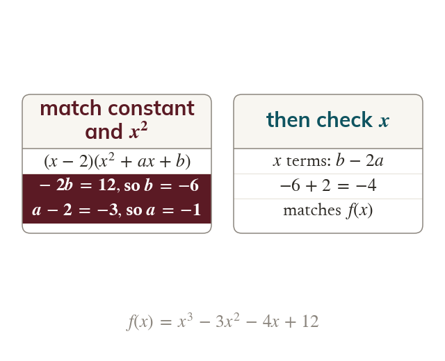

Finding the quadratic factor
A known linear factor leaves a quadratic factor to find. Comparing coefficients finds it: the constant term first, then
Once - a) is known, write the cubic as - a) multiplied by and compare coefficients. The constant term fixes and the terms then fix